2720D10 SEMISHAFT WITH LEFT OR RIGHT JOINT (ONE) - R.R.
- Path
- Procedures > 27 AXLE > 2720 REAR AXLE CASING -SEMISHAFT AND DIFFERENTIAL > 2720D REAR AXLE SEMISHAFTS AND JOINTS > 2720D10 SEMISHAFT WITH LEFT OR RIGHT JOINT (ONE) - R.R.
- Kind
- repair procedure (removal / refitting; the operation number is the code)
- Applies to
- engines: 2.0 16V, 2.8 JTD 8V; all production periods
- Interactive page
- https://sloeber94.github.io/elrnDB-fDct/en/#/244001071
Applies to: engines: 2.0 16V, 2.8 JTD 8V; all production periods; only with equipment: 4X4
 Removing
Removing
 Refitting
Refitting- Position the vehicle on the lift.
- Perform the same operation for both rear wheels.
1. Using a hammer and chisel, remove the staking from the nut securing the wheel hub to the driveshaft.
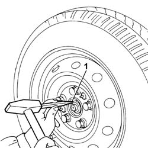
Applies to: engines: 2.0 16V, 2.8 JTD 8V; all production periods; only with equipment: 4X4
- Perform the same operation for both rear wheels.
1. Unscrew the nut securing the wheel hub to the drive shaft and remove.
2. Undo the bolts and remove the wheel assembly.
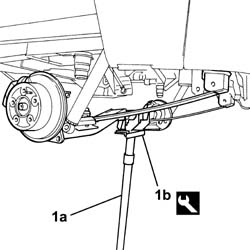
Applies to: engines: 2.0 16V, 2.8 JTD 8V; all production periods; only with equipment: 4X4
- Raise the vehicle.
1. Position an appropriate hydraulic lift (1a) to support the rear axle with the associated stand (1b).
Description | Code | Function | |
|---|---|---|---|
1b | Support | 1.870.602.000 | Rear axle stand |
Applies to: engines: 2.0 16V, 2.8 JTD 8V; all production periods; only with equipment: 4X4
- Working on both sides, release the cable retainers from the leaf springs.
1. Working on both sides of the vehicle, undo the shock absorber fixing bolts.
- Remove the shock absorbers.
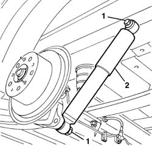
Applies to: engines: 2.0 16V, 2.8 JTD 8V; all production periods; only with equipment: 4X4
1. Remove the retaining clip (1a) and move braking regulator (1b) aside.
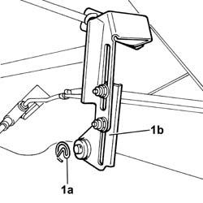
Applies to: engines: 2.0 16V, 2.8 JTD 8V; all production periods; only with equipment: 4X4
1. Unscrew the handbrake adjustment nuts.
2. Remove the spacer.
3. Undo the bolts (3a) and remove the stand (3b).
4. Working on both sides, release the ends of the outer casing (4a) from the retainers (4b).
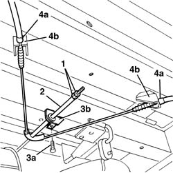
Applies to: engines: 2.0 16V, 2.8 JTD 8V; all production periods; only with equipment: 4X4
- Slightly raise the hydraulic lift to reduce the load on the leaf spring bolts to prevent damage to the bolt thread.
1. Working on both sides of the vehicle, loosen the bolts with the nut (1a) and (1b) fixing the leaf springs.
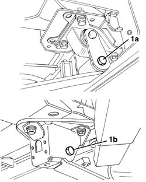
Applies to: engines: 2.0 16V, 2.8 JTD 8V; all production periods; only with equipment: 4X4
- Slightly lower the rear axle with the aid of a hydraulic lift.
1. Prise up the drive shaft couplings from the wheel hub and rear differential and remove.
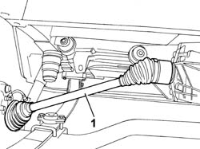
Applies to: engines: 2.0 16V, 2.8 JTD 8V; all production periods; only with equipment: 4X4
Refitting
Removing- Fit the drive shaft to its seat on the rear differential and wheel hub.
- Use a hydraulic lift and the appropriate tool to position the rear axle assembly in its seat.
Description | Code | Function | |
|---|---|---|---|
- | Support | 1.870.602.000 | Rear axle stand |
- Tighten the bolts securing the leaf springs.
- Remove the tool using the hydraulic lift.
Description | Code | Function | |
|---|---|---|---|
- | Support | 1.870.602.000 | Rear axle stand |
- Fit the braking regulator in its seat and refit the retaining clip.
- Fit the cable retainers to the leaf springs on both sides.
- Position the shock aborbers and screw in the bolts without tightening.
- Fit the ends of the outer casings to the retainers on both sides.
- Position the handbrake adjustment device support and secure it using the bolt.
- Position the spacer.
- Screw in the handbrake adjustment nuts without tightening them.
Op. 3380A04 HANDBRAKE - CHECK TRAVEL
- Fit the wheels and secure using the stud bolts, without tightening.
- Lower the vehicle.
- For the 1000 and 1500 kg versions, tighten the wheel bolts to the recommended torque.
Value - daNm | Fastening | Component | Ø | |
|---|---|---|---|---|
- | 16 | Bolt | Wheels | M14 |
- For the 1800 version, tighten the wheel bolts to the recommended torque.
Value - daNm | Fastening | Component | Ø | |
|---|---|---|---|---|
- | 18 | Bolt | Wheels | M16 |
- Remove the vehicle from the lift.
1. The definitive tightening of the nuts fixing the shock absorbers and the leaf springs to the supports should be carried out in design load conditions. Therefore a suitable load must be applied to the vehicle over the rear axle so that distance (L) between the buffer plane and the buffer support plane corresponds to the recommended figure (leaf spring in horizontal position).
Subject | Value | |
|---|---|---|
1 | Ducato 10 - 14 Distance "L" between buffer plane and buffer support plane at design load | 192 mm |
Subject | Value | |
|---|---|---|
1 | Ducato Maxi Distance "L" between buffer plane and buffer support plane at design load | 197 mm |
- The following loads must be applied to the vehicle in the area of the rear axle to obtain the recommended distance.
- Ducato 10 van and truck: 850 kg
- Ducato 10 panorama: 650 kg
- Ducato 14 van: 1100 kg
- Ducato 14 lorry: 1,200 kg
- Ducato Maxi van: 1,250 kg
- Ducato Maxi lorry: 1,400 kg
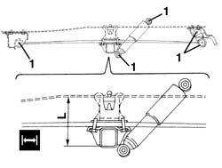
Applies to: engines: 2.0 16V, 2.8 JTD 8V; all production periods; only with equipment: 4X4
1. Tighten the bolts fixing the leaf springs on both sides.
Value - daNm | Fastening | Component | Ø | |
|---|---|---|---|---|
- | 14,2 - 20,6 | Bolt | - | M16x1.5 |
Value - daNm | Fastening | Component | Ø | |
|---|---|---|---|---|
- | 14,2 - 20,6 | Bolt | - | M16x1.5 |
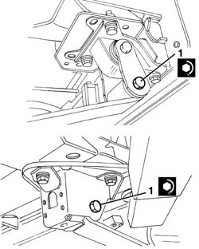
Applies to: engines: 2.0 16V, 2.8 JTD 8V; all production periods
1. Tighten the shock absorber fixing bolts on both sides.
Value - daNm | Fastening | Component | Ø | |
|---|---|---|---|---|
- | 14,7 - 20,9 | Bolt | Rear shock absorber | M16x1.5 |
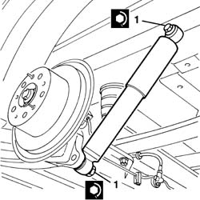
Applies to: engines: 2.0 16V, 2.8 JTD 8V; all production periods; only with equipment: 4X4
- Remove the ballast.
1. Use a hammer and chisel to stake the wheel hub drive shaft retaining nut as shown in the figure.
- The figure below refers to the 1500 kg version.
Value - daNm | Fastening | Component | Ø | |
|---|---|---|---|---|
- | 37 | Nut | - | M28 |
- The figure below refers to the 1800 kg version.
Value - daNm | Fastening | Component | Ø | |
|---|---|---|---|---|
- | 42 | Nut | - | M33 |
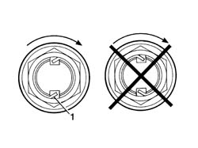
Applies to: engines: 2.0 16V, 2.8 JTD 8V; all production periods
Op. 3330C62 LOAD PROPORTIONING VALVE CONTROL - CHECK AND ADJUST